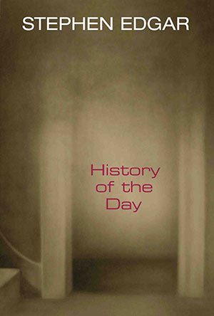

|
History of the Day : Stephen Edgar |
||
 |
 his poems are more sheerly beautiful from moment to moment than those of any other modern poet Clive James, The Times Literary Supplement Book Description At that old station on North Head Inmates still tread the boards, Or something does; equipment there records The voices in the dormitories and wards, Although it’s years abandoned. Undeleted, What happened is embedded and repeated... Stephen Edgar is acknowledged as one of the most elegant and technically astonishing poets currently writing. The poems in History of the Day have an imaginative reach, a grandeur and sweep which lead us through the transfiguring intensities of love to the burdens of loss, grief and horror. They contemplate the fragile nature of consciousness when measured against the immensities of time and space. He engages language at the highest, most sophisticated level. Edgar makes crystalline forms and patterns out of language so that every word glows, catches the light, and illuminates his vision. History of the Day is, quite simply, brilliant. Some of the finest lyric poetry to have been written anywhere in recent times. Gregory Kratzmann, Australian Book Review Winner of the William Baylebridge Memorial Prize for 2009 Cover image: Helen Wright 2:00 (Doorway I) 2005 ISBN 9781876044626 Published 2009 109 pgs $24.95 Top of page |
||
Book Sample
Top of page Reviews
History of the Day John L. Sheppard Five Bells, Summer/Autumn, Vol. 17, Nos 2 & 3, 2010 History of the Day is Edgar’s seventh volume of poetry. The poems have been divided into three sections. The first touches on the personal, contains elegies and love poems, and some relate, for example, to paintings, jewellery, clothing, interludes of life. The second considers issues of life and death, the stark realities of existence, man’s inhumanity to man; so it is wider in scope. The third harks back to earlier themes. I found his poem ‘2:00’ in the first section to be very powerful, almost majestic. The title refers to an event happening at 2.00 a.m. (thereby fitting the book’s title of a history of the day). The persona dreams of waking to find his lover dead at his side. It is an extraordinary intense image, so shocking and yet so real, as if it were not a dream at all. Here is part of it: And so I woke up at the painted hour And turned and found you there, my dead beloved… No fear, but passing shock, then wonder filled My watching as I leant by you, held fast, Certain that you would turn to me, and thrilled By what soft whispered nothings would assuage The three mute years without them that had passed. But not a move. No word. No breath. The poem is complex. The photo on the cover of the book depicts a vaguely seen open door which is described in this poem. Within is grief, love, time, tragedy, memory. Generally, Edgar writes in an objective way, from the perspective of an outside viewer, but in a number of places in this collection there are deeply felt emotional poems, such as love poems and elegies. The poem begins in the objective-viewer style, in that two stanzas of seven lines each do no more than describe the doorway in great detail. Seven lines is somewhat unusual for rhyming poetry, because it makes one line stand out potentially without a partner, so he has chosen to rhyme abcbacc. The sequence creates a rhyming couplet at the end of each stanza, giving a strong sense of completeness to the thought expressed. This pattern is kept throughout the whole poem. As initial readers we have, of course, no inkling of what is to come. Not even the title gives us a clue. Then suddenly the writer launches into the two initial lines reproduced above, and the scene is set, with the author seeing his lover dead beside him in bed. Maybe it is not a dream; maybe a ghost; maybe an hallucination; for it is described as if real, then disintegrates into nothingness. Whatever the case, it is an extraordinary image, and is elegantly told with brilliant clarity and poetic power. Then to round off the poem there is a clever resonance back to the images of the beginning, with the final line of ‘And you entered by the door of two o’clock.’ A somewhat similar structure is in another poem in the first section. It is ‘Nocturnal’, where the poet reminisces about his deceased love, in this case by playing a recording of her voice. The stanzas are of nine lines, with the rhyming scheme abbacccdd. Again the pattern is rather complicated, closing with a rhyming couplet. Again there is a night-time hour, in this case midnight. Again there is resonance, with the first line, ‘It’s midnight now and sounds like midnight then,’ being recalled in the last line: ‘You spoke from midnight, and it’s midnight now’. Again the lost love is brought back to ghostly life, as in Here in the dark I listen, tensing in distress, to each Uncertain fragment of your speech However, not all the first section of the book is as emotionally charged as these two poems. The second section also contains some poems that are deeply felt but less personal. Several are stimulated by viewing photographs, and the writer describes features in them to launch into ruminations on human responses both by individuals depicted in the pictures and by the poet. Some are quite harrowing poems, like ‘Memorial. The lynching of Rubin Stacy, 19 July 1935’. Edgar notices that there is a young girl in the photo watching the execution, and he makes us wonder how she reacts to this horror, and what effect it might have had on her life: This hour will hang between her and the light, Between her and her life to come, this scene And what she is in it will interpose Imperishably through The days that have to be the day that’s been Stanzas are long, of 10 lines, with a rhyming scheme of ababcdecde for each of four stanzas. Much of the early part of the poem is descriptive of the scene, with attention to detail and imaginative richness. There are many beautifully eloquent expressions of language and evocative images, such as ‘transfiguration of sunshine’, ‘blanched beholders’, ‘obscures and slices/From view’, ‘to mask her downward grin’, ‘lifelong souvenir’. Edgar displays masterly word-choices. Edgar’s technical virtuosity is somewhat playfully evidenced by two poems in the collection using the same name, ‘Playing to the Gallery’. One version is located in the first section of the book, the other in the third. If you place them side by side in your mind, you see they have enormous similarities of phrase, but the first is one long narrative, no separate stanzas, no rhymes. The second poem is in quatrains, and features alternating rhyme. It is as if the reader is given a choice to appreciate the one subject in the two forms, and Edgar can be seen to be equally agile in both. He did the same thing in his previous collection Other Summers, with the poem titled ‘Im Sommerwind’. The title of the new book emphasises the passage of time. Poems refer to the time of day, memory, reminiscence, life after death, use of old photographs or paintings, looking at old jewellery (e.g., earrings). In considering such passage of time, the poet delves into dream states and the unreal, the incorporeal, thereby evidencing a quest for the transcendental through the evocation of a heightened consciousness. This quest was immortalised in the extraordinary six-volume French novel by Marcel Proust, In Search of Lost Time, written about 100 years ago; since then a number of poets have sought to structure their work on a time basis, and have taken up some of the themes found in Proust, either consciously or unconsciously. Edgar is well known as a formalist, demonstrating perfection in structure, rhyme, metre and language. He exercises noticeable control over his material. Comparisons have been made between his poetry and that of Anthony Hecht (About Stephen Edgar, stephenedgar.com.au) and Philip Larkin (Clive James, ‘On Stephen Edgar’, The Chimaera, February 2009), but I am personally intrigued by features which can be found in the poems of Christopher Brennan. Both poets are Australian, have a classical training and are able to draw on an extensive store of knowledge; both possess an extensive vocabulary, a sophisticated use of language, and are very competent formalists, as well as being at home with free verse. But the big difference, I think, is that Brennan now sounds distinctly of an earlier time, whereas Edgar has a contemporary touch. Top of page Tools of the Trade: History of the Day Geoff Page Australian Literary Review, 5 May 2010 Sydney poet Stephen Edgar is another who employs traditional forms. Indeed, in recent years he has established himself internationally as one of the most expert contemporary users of metre and rhyme in the language. His seventh collection, History of the Day, has many poems that, like Petsinis’s [My Father's Tools], are satisfying aesthetically while emotionally affecting. Edgar’s characteristic stance is standing back and considering his material, sifting it for its artistic potential while being aware of its humanity or its implications for humanity. In parts I and III of History of the Day there are several deeply felt poems, most notably the poet’s memory of Gwen Harwood in ‘Nocturnal’, as well as 2:00 where the poet is visited by the ghost of a former lover. Edgar demonstrates again here that one of the eternal strengths of traditional form is felt at the end of a poem where metre and rhyme combine to give a strong sense of inevitability. It’s as if any other way of rendering these particular feelings is unthinkable. Even more rewarding, however, is Part II. It is here that Edgar’s emotions are most nakedly engaged and here, too, where he is game to risk the political. ‘Divine Rights’, for instance, is as powerful a pacifist poem as one could hope for, and far more imaginative than most. ‘The Swallows of Baghdad’ is no less so. Even more horrifyingly memorable than these two fine poems is Edgar’s sequence, ‘Those Hours Which Grew to Be Years’, based on a recent exhibition of photographs of American lynchings. In ‘Memorial’, drawn from a photograph of the public murder of Rubin Stacy in 1935, Edgar presents us not only with an ekphrastic description of the photo (or parts of it) but with some of its more appalling implications: And then you see her. At the left she stands, Behind the awful focus of suspense, Her hands crossed, mimicking his handcuffed hands, On her frocked crotch, her naked face intense And lit up with a half-embarrassed leer, A girl of twelve, maybe, too unaware To mask her downward grin... In a poem such as this all Edgar’s technical skills are at the service of something greater than themselves. We are moved to a depth we almost certainly wouldn’t be by more informal verse. As My Father’s Tools and History of the Day demonstrate in their different ways, the resources of metre and rhyme are no less viable in the modern age than is the present orthodoxy of free verse. Top of page The Grand Hotel Stephen Edgar's History of the Day Joshua Mehigan Poetry (Chicago), January 2010 The Ecclesiastical adage about no new thing under the sun remains true most of the time, or is always true but could be amended to say ‘almost no new thing.’ A lot of poets strain toward originality. Some don’t bother. It’s probably given an unsustainable amount of importance. In any case, Stephen Edgar’s poems aren’t quite like anyone else’s. When you first read them, there’s a chill between you and the page as you try to guess his angle. But eventually you will have to read him on his terms. Precursors come to mind and might be fruitfully discussed, given space. One could say Auden. But no one would think ‘Auden’ for more than a moment while reading him. Happily, History of the Day makes you forget the issue altogether. It has scope, depth, technical mastery, and power enough to offer the willing reader a lot of pleasure and who knows how many readings. I say ‘willing reader’ because many poems in History of the Day are difficult. Edgar has packed the book with stuff to discover, and many of its 109 pages could inspire paragraphs of interpretation. The difference between these poems and much difficult contemporary work is that these yield meanings sharable by reader and writer. The poet’s deliberate brand of mystification leads to some very satisfying eureka moments. Edgar frequently describes his subject such that it doesn’t at first appear to be what it is, forcing the reader to see things from an alien viewpoint. One specific method is radical zoom (in or out). Here’s the beginning of ‘Landscape with Figures: an Interlude’: Some wobbling disconnected globules rise Spontaneously behind the far hung plastic That warps above the green. Too late by now. There was a world before, But not this world. This poem gives ground more quickly than others. The next lines tell us that this abstraction is really an empty sunlit landscape and an approaching car, with ‘a family inside it, playing I Spy.’ Elsewhere an abstraction might describe acts of murder or a baby dying in utero. The need to put in effort forces a kind of phenomenological identification with whatever consciousness is at work in a given poem. Nothing flattens poetry more quickly than abstraction, but Edgar almost always succeeds in using it to add resonance. Something else contributing depth to Edgar’s poems is their seamless engagement with literature, art, music, history, and science. Thought-provoking references to Beaumont and Fletcher, Arthur Koestler, and Dr Who are there for you if you notice, but it won’t ruin your enjoyment if you don’t. A few poems depend on potentially unfamiliar concepts like time dilation or places like Noosa. When context doesn’t help, Google might. But the unfamiliarity can also expand readers’ horizons. Without pretension or ethereality, Edgar occasionally uses geology, biology, and physics to take his poems into territory untrodden by most poets. In ‘Event Horizon,’ the view backwards from a space-time boundary serves as a metaphor for memory and its annihilation at death. ‘The Grand Hotel’ compares dimensions theoretically compressed into quantum space with the dimensions compressed into an artwork. ‘Succès de scandale’ traces geological and biological evolution, reducing life momentarily to ‘the ambition,’ and organisms to ‘patterned appetites.’ The poem continues: The annelids, the giant dragonflies With wings of sunlight peeled from the water’s surface Stretched tight, incinerated sauropods Among the ferns that saw the holocaust Unfold and ripple like a hot aurora Pouring from heaven and, in pits of pitch, Attempts at deer like bottled specimens And smilodons appended by their fangs Deep in the black museum - all wasted effort. The feather in the shale like a pressed flower In a book of verse, the fetal hunch of bones Delivered from the rocks: unshockable, Completely ill-equipped to get the point. Edgar’s perspective, vast or minuscule, conveys something important about his worldview. There is no perspective starker than that of nature, or more sublime. The poet exploits that fact constantly to show both aspects everywhere. This could be read in spiritual terms, but I think that reading could deflate the poems somewhat. Edgar’s world is the same with or without spirituality, and sublime enough without. However impersonal these poems can seem, they eventually gravitate toward more human concerns. Later in ‘Succès de scandale,’ the poet writes: But here the single hands all clapped in ochre Imprinted on the deep wall of a cave, The diary of bison, or the prayer, And in the floor the neatly parcelled bones As though sent on, even as they were left Behind, to reconnoitre the new lands Now first emerging, the glimpsed otherworld Too good to be believed in, or resist, To counter this, where they might all soon follow. In this case, the vast distance between ourselves and the painters of Lascaux or Red Hands Cave highlights the permanence of our shared need to come to terms with survival and death. But most of the human concern in History of the Day originates in situations less alien than a cave. There are personal poems like ‘Her Gift,’ which touchingly interprets the symbolism of a Chinese padlock given as a present. There are elegies like ‘2:00’ or ‘Nocturnal,’ both of which describe nighttime memories of a ‘dead belovèd.’ ‘The Cars’ considers a police yard with some crashed cars in it that still contain coins, a crime novel, gum - ’What residue the wreck retains / Of those who have gone home by other ways.’ Other poems depict larger-scale human suffering, such as genocide, war, or natural disaster. In these, Edgar’s restraint becomes crucial. He lets facts speak for themselves, bringing scenes into sharper focus with just a few carefully-chosen details, and often mediates the subject with temporal or spatial distance. An extreme example is ‘Totenstadt,’ which invokes the shadowy past of Noosa, a Queensland vacation spot, where European settlers long ago massacred indigenous Australians. Edgar gives no historical details, but with the title and a few clues lets readers slowly share the horrifying irony of Noosa’s present-day malls, public flowers, and kites. An important aspect of these poems, as seen in the quotations above, is versification, which Edgar uses throughout History of the Day. Some contemporary verse writers overdo things with lockstep rhythms on top of regular meters, or with bad full rhyme. Some use bad off rhymes and loosely metrical lines inspired by Stevens and Lowell without the aplomb of either Stevens or Lowell. But Edgar has mastered versification so thoroughly that it’s no more intrusive than other rhetorical devices, and, more to the point, heightens and modulates his language in the service of meaning. I’d think that Edgar must be on the short list of the best living practitioners of verse, rhymed or blank. His remarkable poems have been a highly rewarding discovery for me. Top of page Poems of still, profound and multi-layered moments... James Charlton, So Much Light, and Stephen Edgar's History of the Day David Kelly Famous Reporter, No. 40, December 2009 Readers who are unfamiliar with the work of James Charlton and Stephen Edgar can find examples at a website the-write-stuff.com which showcases many Tasmanian poets and Stephen Edgar has his own excellent site. Both can write profoundly thoughtful poetry, exquisitely powerful poems of the single moment where awareness is both focused on a particular aspect and also heightened to embrace the total surroundings... I'd also like to quote in full the poem ‘Lesser Long-eared Bat’ [from So Much Light] Crinkly and frail as a fresh scab ~on an old man's knuckle, this tiny bat which flew in the door and flitted over the candle lit room has hung her cape of curled suede on the hat rack. Turning the crushed violet of her head to face me, she eyes me close up from very far away... Many more readers will be familiar with Stephen Edgar’s manner of writing as he has now had six books published, accumulated a few prizes and a solid reputation for concentrating on rhymed metrical verse. Many readers will admire his ability to force words into complex formal patterns and I suspect that few contemporary Australian poets would have the skill to do what he does. But there is a down side to the Edgar style. Take this opening sentence from a poem called ‘Interior with Interiors’: The table’s metal legs, exposed beneath them, Present the bosom, waist and generous hips In outline of a dressmaker’s blank model, The cinctured contour of an hourglass, though The moment of this privileged reflection For all that it’s bare and boundless, doesn’t sift Like sand but stalls in Keatsian suspension. Read and compare to the more contemporary light and dancing words of the ‘Lesser Long-eared Bat’. See the difference? Isn’t there something free and uncluttered and bright about the style of the Bat poem compared to the over-loaded sentence above. Have you figured out who ‘them’ are? What on Earth is going on in the last three lines? (I have never met either poet and am not trying to instigate a stanzas at twenty paces situation.) The ‘them’ in the opening line refers to two people, a man and a woman, featured in the rest of the poem. The poem continues:
The coffee pot The milk jug and the vase, like practices In painterly display and mastery, Call down tangential vagaries of light To ravishing assembly, all unnoticed, Like servants liveried to be ignored. Perhaps a more contemporary styled poem would exchange the ‘tangential vagaries of light’ for ‘random dusty kebab skewers of light’, if you get my drift. Stephen Edgar does address contemporary issues. One excellent idea for a poem happens in ‘The Calls’ when searchers at a train wreck are tormented by hearing mobile phones ringing in the wreckage; phones that are not answered. Unfortunately it remains an excellent idea. Somehow the poem doesn’t do justice to the immense feelings and irony of the situation. Still, there are several truly fine poems in the book where his style and his message marry well; his ghost and his machine become one. Such a poem is ‘Her Gift’. The message is beautiful and warm; the rhymes fall bang into place as if just spoken that way; there are references that bespeak a kind of cultured quality of the two people - lapis lazuli, Tara, bodhisattva, The Lark Ascending - and I see nothing wrong with being a little cultured. Another excellent poem at the higher end of the scale is simply titled ‘2.00’. It concerns a middle of the night visitation from a deceased lover. The title is the title of a painting which is reproduced on the front cover. Curious about the rhyme scheme I despoiled my copy of the book and found out that it was a b c b a c c in every stanza except the middle one. However a curious point emerged on further looking. In the middle stanza, at the pivot of the poem the rhyme scheme changes to a b c a b c c right on the word ‘undo’. The lines are: Your body’s form unthreatened and content As in the life, till waking should undo What sleep persuaded in my eyes. At the exact point where he wakes from the dream the word ‘undo’ is out of whack in the rhyme scheme and it is the exact middle line of the poem. Just chance? Couldn’t get the rhyme right that time? Or deliberately set there for some subtle effect that most people would never notice. I guess we’ll never know. Stephen Edgar’s poetry is modest, well structured, and, if you like, polite. It has a quiet attitude of - if you don’t like it that’s OK, this is what I do. However my subjective response is that there is something about its old-fashionedness that dampens my enthusiasm for it. Even the layout with capital letters to start each line is uncontemporary. It is hard to make some judgements without causing offence but I derive greater enjoyment and stimulation from reading poetry where the poet has put energy into trying to push the artform forward rather than attempting to do it the way it used to be done. Top of page Form and Fashion in Stephen Edgar’s Verse: History Of The Day Michelle Cahill (editor) Mascara Literary Review - Issue 6, November 2009 History of the Day is Stephen Edgar’s seventh collection. Acclaimed for his formal virtuosity, the painterly style of his images, and an objective, pondering engagement with his themes, his work stems from the modernist tradition for which temporal, aesthetic and moral categories are ordered into a wholeness: that which Stevens refers to as a ‘blessed rage for order,’ and Adam Kirsch describes as ‘its unequivocally positive character.’ But how relevant is Edgar’s quiet insistence on aesthetic and ethical authenticity in the discursive climate of postmodernity? His formal music might seem to be mannered, anachronistic, or elitist even, in its positioned detachment from the real. Reading History of the Day might seem a foreign experience, rather like learning a new language, Edgar’s work being labyrinthine and at times recondite. His polished cognizance, his formally oblique and elaborate praise of things ordinary defies a trend in contemporary poetics. Seemingly removed from the lineage of Rimbaud, Lowell, Plath or indeed Adamson, his poetry is, if challenging, deeply satisfying for its clarity, its faithfulness to measured forms of language and thought. History of The Day is a collection of modesty and harmony. An outward sign of its grace is reflected in the book’s structure. Each of three sections are inspired by the epigraph taken from Lawrence Durrell’s Balthazar so that we move from poems which encounter the intimately personal, to the those of historical irony and philosophical inflection, followed by the last sequence, a miscellany, in which poems are addressed to other poets. Edgar’s acknowledged influences include W.H. Auden, Richard Wilbur, Anthony Hecht, as well as the Australian poets Gwen Harwood and Peter Porter, among others. His sensibilities are refined, at times overwrought; his preoccupations are with the relativity of time, space, destiny and history. A poem such as ‘Space’ is a fine illustration of Edgar’s themes and style. Here, he takes a single image of a Treasury flag flapping in the breeze as an instance of the physicality of space as it exists in the mind’s eye. The images are visceral. They emphasise a perspective in which the flag is central: the way it ‘writhes’ against the ‘muscled’ breeze, the ‘distortions’ of matter within ‘a moment’s frame’. The tangential observer, aware of time elapsing, journeys on towards the ‘day’s blue, contested edges.’ Broken into stanzas the poem derives its form from the Italian or Petrachan sonnet, with some license exercised to the rhyme scheme in the octave. The beguiling simplicity of its subject, the elasticity of its iambic metre, and its refined contemplation are hallmarks of Edgar’s most impressive lyrics. It’s a poem that reconciles image, form and thought effortlessly, turning adroitly from minimalism to perceptual complexity. Space-time distortions are a principal concern for the poet. In many of the poems Edgar takes a phenomenological interest in experience and how it is structured consciously. His attention to the detail of these processes enables him to amplify scenes, embellish their dimensions and surfaces, so that time is almost warped, slowed down to the shimmering speed of thought. We hear this echoed in the marvellously speculative poem ‘Dreaming At The Speed Of Light’: And every thought would undergo This rallentando, every word Would grind down to a halt Midsyllable, interminably heard, But charged with full intention even so, And purity of tone, Quantum ironies resound within the poem’s weave of internal assonance and simple rhymes. Such poems exemplify the liberating and quirky possibilities of Edgar’s formal music. The situations and figures are often more emblematic than realistic, creating the mildly disturbing effect of defamiliarisation, so that we are excluded from the engendering of illusion. The subject matter, however benign, is nuanced with a disenchantment that falls short of defeat. This kind of alienation is modernist in its impulse. There is an almost Brechtian distancing effect which along with the historical referencing of many of the poems, imbues them with complex ironies. In ‘Out of the Picture’ Edgar dramatises the dual perspective of an Impressionist painting. On the one hand is the ‘unnoticed, unmissed’ feminine figure who ‘saunters between/The poplars’ out of the picture towards a forgotten ending. The last stanza suggests an alternate perspective of the painting’s observer, for whom it is As pointless to depart as to delay: In either course is folded the same space. In Istanbul next year or here today: The attention given to the placement of figures, and to the spectator perspective with its minimalist interaction emphasises divisions between the viewer’s world and the picture space or the scene depicted, whether it be through a photograph of lynching as in the powerful evocation’ Those Hours Which Grew To Be Years’, through a dream, as in ‘Dream Works’ or through a camera lens, as in ‘The Swallows Of Baghdad.’ As a war poem, one could argue that ‘The Swallows Of Baghdad’ pursues its ethical argument tentatively, leaning towards a tactful, aestheticised vision of war’s brutality. The swallows with their ‘flickering wings,’ who dart through a ‘ruined roof/To perch on dreadful engines,’ are twice removed from the observer, being reminiscent of ‘a scene from Attenborough.’ Edgar’s instincts are always on the side of aesthetics, though one feels the tension between this principle and what is being represented. Moreover the poem attempts to eschew complacency in its ending lines: A camera reeling in that chamber follows Their lit flight, where—too recently to show— The cameras turned to darkness for their proof. The framing of scenes and narratives is one aspect of the poet’s architectonic finesse but it’s also a lens through which history and memory can be purposeful; intensifying and correcting time. This is beautifully realised in the book’s opening poem ‘Golden Coast,’ in which natures’s ravages are compared to those of love. Edgar’s diction juxtaposes the idyllic with the hideous, as overdeveloped skyscrapers ‘make their mark,/Their ulceration of the golden coast/ whose beauties they would sell, Under the settling sediment of dark.’ Metaphysical in its dialectic and reminiscent of Herbert or Donne, the poem illuminates how memory operates within a dimension that transcends time. The idyllic moment of love’s intensity is preserved : This day unknown to time will be there when The light drifts through the shallows like a ghost And dies of hours, the skies And earth fall down and chaos comes again. How many contemporary poets would dare voice such painterly abstractions, such affirmation? A reader who might resist a title such as ‘Golden Coast,’ is convinced by the thoughtful accuracy of Edgar’s diction, which describes how ‘lights as laggardly as sound/Struggle to make the passage of the gloom.’ Like a Hopper painting, many of the poems play with a symbolic use of light and shade, and the careful placement of figures within a given scene. This attention to topographies and symmetry is distinctly metaphysical, an ordering principle pleasingly realised in ‘The Earrings.’ The central conceit of a deceased lover’s earrings, gifted to a living spouse, play on the spherical as a symbol of nuptial unity, destiny, and the amatory universe. With adroitness the poet is able to reconcile loss with recovery, the ironic with the ardent, to unify All of the properties, The pain, Pleasures, desires, memories That nothing will appease, Nothing detain, Chronological time does not correspond to memory, dream or to lived experience as the portals between past and present are traversed in language. Mystical encounters are celebrated: the dead speak, a doppelgänger contradicts himself, entering not a boardroom, but a museum ‘of lost antiquities,’ the ‘mortared ghost of locomotion surges’ in the sculptural form of a train. In the poem ‘Nocturnal,’ Edgar’s prosody echoes a Keatsian ode in its iambic rhetoric: Who ever thought they would not hear the dead? Who ever thought that they could quarantine Those who are not, who once had been? The reader is moved and surprised by the poet’s wit. The discrepancy between the recorded and real voice of the poet’s deceased partner is metonymic of the breach between memory and presence, an impasse into which the poem enters. History of The Day is a book of Escheresque passages rendered by the effects of recollection, repetition and doubling: The past is ‘Undeleted,’ Edgar writes, ‘What happened is embedded and repeated.’ Speculative, ekphrastic or historical, the poems duplicate and tease semantic possibilities which we encounter in poems like ‘Parallel Worlds’ or ‘Interior With Interiors.’ This latter poem, inspired by a Ramon Casas painting depicts a scene where a woman and man are mutually abandoned to each other: she ‘self-absorbed’; he perhaps dreaming of bliss, a ‘total consummation’ from which he might soon enough be dissatisfied, ‘wishing to be elsewhere.’ The artefacts of realism: coffee pot, milk jug and vase become little more than props, or ‘servants liveried to be ignored,’ as the text, painting or poem opens to the world of boundless interiors. With idiosyncratic flair, Edgar probes the inner milieu. Yet a stronger dialectic between the individual and history than we have come to expect from him is voiced in this collection. The extrajudicial mob violence of white American supremacy is powerfully depicted in ‘Those Hours Which Grew To Be Years.’ Here Edgar critiques the historical lens in his appalled response to photographs of Frank Embree’s and Rubin Stacey’s lynchings. The naked Embree is ‘stripped/And scored with the judicial script/Of whips,’ but the poem returns a Christ-like dignity to his ‘composed face.’ Here, at his most outraged, Edgar turns poetic style to indictment. He scrambles the metres. Rarely do we see him mix the insistent accents of dactyl with the iambic and anapaest in his prosody: Take him away Airbrush him out, And all these men who stand about In the clean light of day, In another poem from the sequence, a young white girl’s voyeurism is depicted with uncharacteristic and intended vulgarity: Her hands crossed, mimicking his handcuffed hands, On her frocked crotch, her naked face intense And lit up with a half-embarrassed leer, These are poems in which the observer’s perspective, regardless of his nationality, class or race exceeds that of witness. Edgar brings into focus the crisis between the social juggernauts of supremacy and a humanist conscience. Whatever subject his poems address, no matter how grand or horrific, Stephen Edgar elegantly affirms an objective displacement, sometimes theatrical or emblematic, as moments of recollection, history, art and culture are revisited and referenced. This self-imposed distance renders him faithful to his aesthetic and ethical ideals. Repeatedly, in History Of The Day, what is beautiful is sustained by loss, to become the property of memory. The ravages of history are, at least partially, restored to dignity. Here is a work which dares, in a postmodern, Microsoft era, to entertain serious aesthetic contemplations. The speaker encounters notions of reality that are fragile, provisional and constructed within the infinite domains of space-time as he attempts to order Dimensions at the heart of matter, Immensities wound up, that mind Cannot conceive? Notes: Adam Kirsch, The Modern Element, WW Norton, New York, 2008, pg. 10 Top of page Blind Ubiquity Clive James The Times Literary Supplement, 14 September 2009 I should declare an interest, not to say a fascination. When I read Stephen Edgar’s last collection but one, Lost in the Foreground, and concluded that he was setting a new mark of accomplishment for the Australian formalist poets, I made immediate plans to meet him, if only to check up on whether he was a normally configured human being, and not a cyborg toting a large extra memory box for his vocabulary and range of technical skills. He turned out to look like what he is: a classicist who makes a crust by correcting the textual errors of other people, and writes poems on the side. Our first lunch at the Oyster Bar on Sydney’s Circular Quay lasted until dusk, and we have been friends ever since. So the reader should allow for a possible bias. But the reader should first consider this: ‘Above the cenotaph, stuck to the sky / As though on long thin pins, the cut-out shapes / Of kites tug at the wind and won’t let go’. Placed arrestingly in a poem called ‘Totenstadt’, such an apparently elementary moment counts among the most basic building blocks of an Edgar stanza. Even the simplest registration raises a question of perception. You can see the kites, but you can also see how they might look as if they were stuck to the sky, and doing the tugging instead of being tugged. But a whole stanza can be a building block too, raising, on a larger scale, another question about perception. In ‘Dreaming at the Speed of Light’, the narrator is seeing the world from his viewpoint of a ray of light: The falling autumn leaves would stall Above the lawn, their futile red A stationary fire; The dog erupting from the pond would spread In hanging glints its diamanté shawl Of shaken spray midair; The blue arc of the wave would climb no higher, A gauze of glare And water that would neither break nor sprawl. You might say that there are stretches of prose in Nicholson Baker’s The Fermata that give the same freeze-frame effect, but Baker didn’t do them in stanzaic form. And when we pull our own viewpoint back to see how Edgar’s stanza is put together, we find that there are only four rhyme-sounds holding the fluent progress on course as it switches between four different iambic metres, the whole thing seeming so spontaneous that it might have been a one-off. But then, when we pull back to see the whole poem, all four of its stanzas are built on exactly the same pattern. Edgar often composes in free forms as well – he is a master of the unrhymed verse paragraph – but an unpredictably varied yet precisely matching strophic construction is his characteristic approach. When I first read Edgar, and realized he was making up these elaborate stanzas and then replicating them throughout the poem as if to prove that his idea of freedom was all discipline and vice versa, I thought immediately of Richard Wilbur in that sumptuous post-Second World War phase when he was producing the intricately articulated clarities of ‘Piazza di Spagna, Early Morning’ and ‘A Baroque Wall Fountain in the Villa Sciarra’. But at our lunch Edgar revealed that, much as he admired Wilbur, for him Anthony Hecht had been more important. If he had read neither Wilbur nor Hecht, he might still have got the idea from Larkin; and Larkin got it from Hardy and the later Yeats. Edgar might quite possibly have concocted the whole approach if he had read nothing but Keats’s Odes. What was certain is that there had been very little Australian poetry like it. If Edgar was getting his technical inspiration out of the air, it was out of the world’s air, and not just the air of his own country. The point needs stressing because in Australia the idea is firmly entrenched that any self-imposed formal requirement must be an inhibition to expression. The idea got a long way in America, where to argue the contrary seemed undemocratic; and it has caught on in Britain, where it is thought to be a useful instrument in wresting the control of creativity from a privileged class. But in Australia it has attained the status of an orthodoxy. On the whole, by those who edit the anthologies and staff the prize committees, an apprehensible pattern is thought to be a repressive hangover from the old imperialism; and all too many of the poets think the same. The view is aided by the unarguable fact that Les Murray (whom Edgar admires, as we all do) usually doesn’t produce apprehensible patterns either. But at least Murray knows what they are. It isn’t his fault that the ruling majority of people concerned with poetry in Australia think that free verse is a requirement of liberty, and anything constructed to a pattern must be leaving something essential out. Edgar’s steadily accumulating achievement had been of a quality too high to be buried by the inattention of dunces, and he has attracted some excellent criticism. But it is still quite common for his work to be belittled as if there was something un-Australian about it. Indeed there is. Though his work teems with specifically Australian details, much of it would be intelligible anywhere; and there is a lot more that is not tied to his country at all. Two of the poems in his new collection, History of the Day, are about the days of lynch law in America, and one of them is among the best poems in the book. But Edgar doesn’t need a non-Australian subject to be ‘international’ in the sense that was once used so longingly. (There were commercials that called the tennis player John Newcombe an ‘Australian International’.) There is a little poem called ‘All Rights Reserved’ in which I would like to think I play a key role, because it is set in the Oyster Bar, and I am Edgar’s opposite number in the story he narrates. This time it was dinner; but the real subject, which goes right round the world, is the sky, which adjusts to the sinking sun ‘Almost as though it hears itself discussed, / And flourishes its menu, from gold dust / Through peach to lazuli...’. This range of colours at each end of the day is likely to be the first attraction for a new reader of Edgar: dawns by Charles Conder link to twilights by Whistler, with whole vistas assembled out of textures and atmospherics. But there is nothing anachronistically fin de siècle about his palette, or not that siècle anyway: Edgar’s weather is the weather of modern scientific observation, and quite often registered in a vocabulary that sends you to the dictionary, although seldom without first making you catch your breath at its luxuriance. It’s important to stress the enchantment of these subsidiary effects because this new volume is a bit lighter on his primary effects than his previous one, Other Summers, which contained the sequence called ‘Consume My Heart Away’, whose constituent poems are generally held to be his most intense so far. Actually I think this is a false trail, because there are magisterial personal poems, mainly to do with the lingering anguish caused by the death of his first love, scattered everywhere in his work; but there is no denying that a poem like ‘Man on the Moon’ – which stands out even in the luminous cluster of ‘Consume My Heart Away’ – makes you wonder where he might go next if he ever decided again to surrender some of his personal detachment. He will never surrender his control, which is of the essence in all his work; but Edgar set a new standard for himself when he turned an interlude of heartbreak into a sequence of poems that cut unusually deep into his own equilibrium. So startling was the sequence that some of his critics have begun to use it as a stick with which to beat him, saying that the personal note put his earlier work in the shade. But that view will not hold up, because his big stand-alone poems so often range as widely within his own psyche as can be imagined. The only possible objection to this collection would be that there are fewer of them than usual. But one of them is among his very best. Called ‘The Red Sea’, it is about three little girls playing with toy boats in the shallows of North West Bay, south of Hobart: Hard to conceive that they should be Precisely who they are and here, Lost in the idle luxury of play. And hard to credit that the self-same sea That joins them in their idleness today, Careless of latitude and hemisphere, Blind with ubiquity, Churns elsewhere with a white uproar, Or wipes the Slave Coast clean of trees... And so on, all around the globe, as the ocean threatens the idyll. A poem about how there can be no such thing as a local vision, no matter how particular and intense, it would alone be sufficient evidence that Stephen Edgar, in the fullness of his accomplishment, can be called an Australian poet only at the cost of slighting both adjective and noun. Even when his approach to a subject is oblique, you always get the sure sense that he is trying to light it up. Models of plain speech even at their most eloquent, his poems are more sheerly beautiful from moment to moment than those of any other modern poet I can think of. Top of page Formal Music - History of the Day Paul Hetherington (poet) Australian Book Review, 20 June 2009 History of the Day is Stephen Edgar’s seventh poetry collection. His first was Queuing for the Mudd Club in 1985, and over the last twenty-four years he has been publishing poetry with a strikingly individual formal music. This latest volume further refines his superbly measured control of rhythm and cadence. There is nothing else like it in contemporary Australian poetry. Edgar’s poetry has always explored a wide variety of subjects, exhibiting a questing, cerebral and sometimes troubled sensibility. History of the Day confirms his interest in human history (and human injustice and cruelty), art and culture, and the possibility of certain kinds of illumination. Notwithstanding Edgar’s complex preoccupations, his poems - many are part narrative, part rumination - move with steadiness and grace. It is as if his measured works, his subtly judicious explorations of poetic form, are a counter-statement to the world’s imperfections; or as if the poet, through the overtly constructed framework of his poetry, is reminding the reader that he is a maker who has a responsibility to shape the language he works in. To get the best out of his poems, one needs to pay particular attention to their stories and measures; get to know their sometimes reserved poetic voice, and follow their intricate and original patterns of thought. The formality of Edgar’s writing in History of the Day occasionally creates a sense that particular poems are primarily concerned with their own aesthetic and literary considerations. This is especially true of the more filmic and painterly works, such as ‘Out of the Picture’: ‘And so, as in some formal wooded scene / By an Impressionist, / The lady with the tilted parasol / And gravel-kissing hem saunters between / The poplars.’ Here, human figures and their situations are emblematic rather than realistic, and there is a nuanced distance, like a shimmer, between reader and poetic effect. However, in Edgar’s last two books - Other Summers (2006) and this one - his poetry has also ventured into the territory of direct personal utterance. Such poetry has an important place in the English-language poetic tradition, but, generally speaking, Edgar has previously eschewed the form, even in earlier poems about personal and family matters. History of the Day begins with poems about intimacy and moves quickly to poems about loss (in some cases these are the same poem). Edgar’s poetic voice is direct and polished, and these poems signal the volume’s significant preoccupation with the intersection of past and present. ‘The Earrings’ is a prime example. It shows off Edgar’s virtuosic technique - with alternating lines of iambic trimeter, monometer, tetrameter, trimeter and dimeter - while exhibiting an attractive simplicity in its diction and achieving a relaxed sense of movement throughout. Earrings, having been put aside after their original wearer passed away, were ‘long lost inside / The void / Of an old jewel box, denied / Adorning: to be eyed, / To be enjoyed’. They are given new meaning by being given to and worn by another, and the poet observes how ‘mended spheres accrue, / Blend and combine’. Such writing, with its punning attention to language, has a strongly metaphysical dimension. There are two poems in the volume’s opening section in which the speaker is visited by a ghost from the past. In one, simply entitled ‘2:00’, the poet suffers the ethereal visitation of a former intimate: ‘And so I woke up at the painted hour / And turned and found you there.’ In ‘Nocturnal’, the poet accidentally rediscovers a cassette recording of the poet Gwen Harwood years after her death. This leads him to consider how, ‘Here in the dark / I listen, tensing in distress, to each / Uncertain fragment of your speech’. In the carefully wrought context of this poem, such plain speaking is compelling and poignant. Following on from these poems, the volume repeatedly invokes notions of afterlife, dream-life, fantasy and alternative reality - even the idea of a mysterious double life. Multiple poetic doorways are provided to the myriad places of the unconscious or creative mind. As one reads, a great deal becomes insubstantial or evanesces, or is shown to be in flux. Much of significance is elusive; much that matters belongs to the imagination or to the past. The passing of time is one of the main preoccupations of this volume. In ‘Those Hours Which Grew to Be Years’, Edgar meditates on photographs of African Americans lynched in the United States in the late nineteenth and early twentieth centuries. His involved detachment is employed to good effect as these poems search after the eerie stillness of the photographic scenes they refer to: ‘In the still transfiguration of sunshine / That whites out almost all one leg and arm / Until they merge into the slender pine / He’s hanging from with an inhuman calm’ (‘Memorial’). Edgar’s control enables him to powerfully question what the documentary record or, for that matter, what art can really say about human injustice and cruelty. The poems demonstrate a great delicacy of utterance, a subtle tonal control and intricate, almost woven textures. They illuminate through extending the possibilities of language and through a clear-eyed scrutiny of human experience. [Author’s note: In “Nocturnal”, although Gwen Harwood is referred to, she is not in fact the subject of the poem and it is not her voice on the cassette.] Top of page Stephen Edgar's History of the Day Geoff Page The Book Show, Radio National, 20 July 2009 Geoff Page: You’ve just heard the last two stanzas of Stephen Edgar’s poem, ‘Memorial’, about the lynching of Robin Stacy on July 19, 1935. It’s one of a series of poems based on an exhibition of photographs showing the lynching of African-Americans in the Deep South of the US from the 1890s to the 1930s. In this poem, Stephen Edgar, almost certainly our most impressive current user of traditional metre and rhyme, meditates on the impact that having been there, and having seen what she has seen, will have on the white girl of twelve who’s been photographed with the lynch mob. His description of her (and the rest of the photograph, elsewhere in the poem) is measured, closely-observant and searching. Edgar’s mainly iambic pentameter lines and elaborate rhyme scheme seem to force us to think more deeply on the matter, just as he has had to do in writing the poem. The horror of what the young girl has seen will become a ‘lifelong souvenir’. She knows that it will ‘light forever everything she knows / With what she saw, and what she knows she saw, and knew.’ It’s rare to have a writer’s disgust with the extremes of human cruelty more forcefully thrust on our attention. Fortunately, perhaps, not all of Edgar’s latest collection, History of the Day, operates at this distressing level. The book is arranged into three sections which use for their epigraphs fragments from a sentence by Lawrence Durrell in his novel, Balthazar. ‘The picture I drew was a provisional one - like the picture of a lost civilisation deduced from a few fragmented vases, an inscribed tablet, an amulet, some human bones, a gold smiling death mask.’ This sentence itself captures something of Edgar’s characteristic poetic stance. There is a sense of the poet standing back and considering his material, of sifting through it for its artistic potential while, at the same time, remaining aware of its humanity - or its implications for humanity. In Parts I and III of History of the Day, Edgar is often more detached. His focus is primarily on aesthetics. There are many elegant poems here, demonstrating Edgar’s remarkable ingenuity with rhyme, metre, language and imagery. The first stanza of ‘Moving Figure’ is fairly typical: ‘Over the surface of the lake / The vacant and undisciplined / Labilities of light and shadow make / Strange architectures in the lapping wind...’ There are also, however, in these opening and closing sections a number of more deeply felt pieces, most notably in ‘Nocturnal’ and ‘2:00’, two poems addressed to an earlier, much-loved and now deceased partner whose name is not given, as befits the restraint that Edgar shows elsewhere throughout his work. Even more satisfying to this reader, however, is Section II, which begins with the epigraph fragment: ‘some human bones, a gold smiling death mask’. It is here that Edgar’s emotions are most nakedly engaged and here, too, where he is even game to risk the political. ‘Divine Rights’, for instance, is as powerful a pacifist poem as one could wish for - and far more imaginative than most. ‘The Swallows of Baghdad’ is no less so. The deeply disturbing poem, ‘Memorial’, which I’ve discussed already, is also from this middle section. Having read History of the Day, one is left in no doubt that the death of traditional verse forms was somewhat prematurely announced by Walt Whitman back in 1855 with his free verse manifesto, ‘Song of Myself’. The resources of metre and rhyme are no more or less suited to the so-called modern age than free verse is, a fact which Stephen Edgar’s poetry continues to demonstrate. Top of page Art and Humanity Merge in Metre and Rhyme Stephen Edgar's History of the Day Geoff Page The Canberra Times, 20 June 2009 Stephen Edgar’s seventh collection, History of the Day, has a healthy number of poems that are deeply satisfying aesthetically and also emotionally affecting. With his last four books he has established himself internationally as one of the most expert contemporary users of traditional metre and rhyme in the language. His poems have been published overseas, and lauded for their technical perfection by a number of American and British poets and critics. History of the Day is thoughtfully arranged into three thematic sections which use for their epigraphs fragments from a sentence by Lawrence Darrell in his novel, Balthazar. ‘The picture I drew was a provisional one – like the picture of a lost civilization deduced from a few fragmented vases, an inscribed tablet, an amulet, some human bones, a gold smiling death mask.’ This sentence itself captures something of Edgar’s characteristic poetic stance. There is a sense of the poet standing back and considering his material, of sifting through it for its artistic potential while, at the same time, still being aware of its humanity – or its implications for humanity. In Parts I and III of History of the Day, Edgar is at his most detached. His focus is primarily on aesthetics. There are many elegant poems, showing Edgar’s remarkable ingenuity with rhyme, metre, language and imagery. The first stanza of ‘Moving Figure’ is a typical one: ‘Over the surface of the lake / The vacant and undisciplined / Labilities of light and shadow make / Strange architectures in the lapping wind...’ There are also, however, in these opening and closing sections a number of more deeply felt pieces, most notably in ‘Nocturnal’ and ‘2:00’, two poems addressed to an earlier, much-loved and now deceased partner whose name is not given, as befits the restraint that Edgar shows elsewhere throughout his work. One of the eternal strengths of traditional form is frequently felt at the end of a poem where metre and rhyme combine to give a strong sense of inevitability. It’s as if any other way of rendering such feelings is, quite simply, unthinkable. Even more satisfying, however, is Section II, which begins with the epigraph fragment: ‘some human bones, a gold smiling death mask’. It is here that Edgar’s emotions are most nakedly engaged, and where he is even game to risk the political. ‘Divine Rights,’ for instance, is as powerful a pacifist poem as one could hope for – and far more imaginative than most. ‘The Swallows of Baghdad’ is no less so. Indeed, Edgar often uses delicate but forceful arguments in his poems, even the more lyrical ones. More horrifyingly memorable than ‘Divine Rights’ and ‘The Swallows of Baghdad,’ however, is his sequence of poems, ‘Those Hours Which Grew To Be Years,’ based on a recent exhibition of photographs of American lynchings. In ‘Memorial,’ for instance, drawn from a photograph of the public murder of Rubin Stacy in 1935, Edgar presents us not only with an ekphrastic description of the photo (or parts of it) but with some of its more horrific implications: ‘And then you see her. At the left she stands, / Behind the awful focus of suspense, / Her hands crossed, mimicking his handcuffed hands, / On her frocked crotch, her naked face intense / And lit up with a half-embarrassed leer, / A girl of twelve, maybe, too unaware / To mask her downward grin...’ In a poem like this all Edgar’s technical skills are at the service of something greater than themselves. We are moved to a depth we almost certainly wouldn’t be by more informal verse. Less disturbing, but also very poignant, is Edgar’s sonnet, ‘The Calls,’ about a railway smash in Yorkshire. It ends with an image of the rescuers who could tell ‘more bodies lay there by the tones, / Plaguing the folded wreckage with inane / Persistence, of their ringing mobile phones.’ It is poems like these where Edgar’s unequalled technical gifts are best employed. An instructive exercise in this discussion of technique might be to compare two poems Edgar has included with the same name. ‘Playing to the Gallery’ is first written in the relatively loose form, blank verse, while the second is in iambic pentameter quatrains rhyming abab. Both poems contain the book’s title phrase and indeed a considerable number of other near-identical phrases. Both are vintage Edgar poems but the better one, to my mind, is the blank version. Here he goes more directly to his chief concerns and is not deflected in any way by the demands of his ultra-tight rhyme scheme. The tone of both is similar but the more open one leaves a stronger impression., There’s no doubt that History of the Day proves that the death of traditional verse forms was prematurely announced by Walt Whitman back in 1855 with his free-verse manifesto, ‘Song of Myself.’ The resources of metre and rhyme are no more or less suited to the ‘modern age’ than free verse is, a fact which Stephen Edgar’s poetry continues to demonstrate. Top of page |
{kind=link}